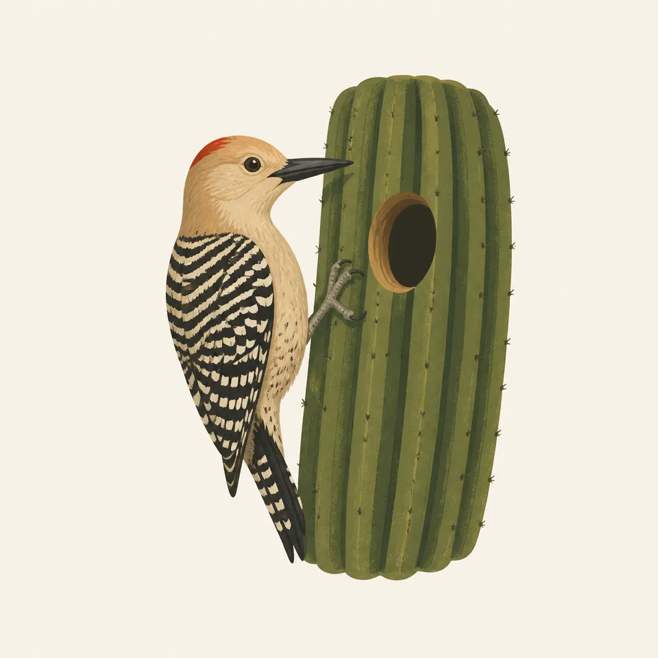
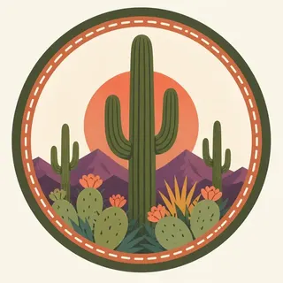

01
Cactus forest
The bajada at the foot of the Rincons is the forest people came to protect. University of Arizona scientists were already arguing for the Tanque Verde cactus forest before the monument existed.
TrailMark Archive Edition
Arizona | Two districts
A cactus forest stands on both sides of Tucson, with the Rincons rising into oak and pine above the desert floor.
Archive No. TM-SAGU-016
National Park since 1994
Collection Sonoran Desert
Park Overview
Saguaro National Park is the Sonoran Desert held on either side of Tucson. The National Park Service calls that desert the most biodiverse, and credits water plus a large rise in elevation.
Herbert Hoover declared the land a national monument on March 1, 1933. Congress made it a national park in 1994. The Tucson Mountain District, about 15,360 acres, was added to the monument on November 15, 1961.
The two districts are not the same desert. The Rincon Mountain District runs from 2,670 feet to 8,666 feet and holds six biotic communities, from desert scrub up through mixed conifer. The Tucson Mountain District stays lower, 2,180 to 4,687 feet, in desert scrub and desert grassland.
Emotional Thesis
A saguaro reads instantly. The park asks for a second look: the same plant standing under the Rincons, where the slope continues into oak woodland and pine, and again in the Tucson Mountains, where the desert does not climb that high.
TrailMark keeps the cactus in the hero and the elevation in the essay. Without the rise, this would be a single postcard.
Landscape Highlights
01
The bajada at the foot of the Rincons is the forest people came to protect. University of Arizona scientists were already arguing for the Tanque Verde cactus forest before the monument existed.
02
The west district was part of Pima County parkland before the 1961 proclamation. It is hotter and lower, and it does not carry the pine forest of the Rincons.
03
From the desert floor the communities stack: scrub, grassland, oak woodland, pine-oak, pine forest, mixed conifer. Average precipitation on this side is about 12.30 inches a year.
Wildlife
The higher Rincons hold black bear, Mexican spotted owl, Arizona mountain kingsnake, and white-tailed deer. The Tucson Mountain District is the place NPS names coyote, Gambel's quail, and desert tortoise.

01
The extra drawing shows a woodpecker at a hole in a saguaro. That is the illustration. The species list belongs to the park, not to the drawing.
02
Desert tortoises in the west district should be left on the ground. A lifted tortoise is a harmed tortoise.
03
The park has a traditional use area for collecting saguaro fruit. That is a cultural practice on the land, not a visitor souvenir.
Geology
NPS points visitors to a geology page for both districts. What the nature page already makes plain is the elevation gap: the Rincons top out at 8,666 feet and the Tucson Mountains at 4,687.
01
That gap is why one park holds desert scrub and mixed conifer. The plants are the cross-section.
02
Water is scarce enough to be its own curriculum on the park site. Do not treat a dry wash as a permanent stream.
03
Happy Valley Lookout, high in the Rincons, watched for fire into the 1970s. The desert and the forest burn on different terms.
The floor is the walking season. The high Rincons can be a different climate on the same day. Check which district you mean.
Bloom is a bonus tied to rain, not a promise. The cactus forest is the subject even when the annuals stay quiet.
The Tucson Mountains, with about 10.27 inches of rain in an average year, are a hot district. Start early and carry water for the temperature.
Heat eases on the bajada. The pine slope stays its own place. This is a good time to learn the six communities instead of one turnout.
Photography
A saguaro against sky is the logo. A saguaro with the Rincon slope behind it is the park.
01
Make one frame in the cactus forest and, if you go west, one in the Tucson Mountains. They should not look interchangeable.
02
Step back until the arms and the ground plants share the frame. A tight crop of spines could be any desert.
03
If a bird is using a cavity, the photograph is from the trail, not from the base of the cactus.
Field Notes
The saguaro is so recognizable that the mountain behind it almost gets away with being invisible.
TrailMark Field Notes

Badge Story
The badge fails if the cactus could be a Joshua tree or a generic succulent. Ribs and a few arms are the whole mark.
Green columns against Sonoran orange, not the white of gypsum and not the red of a canyon wall.
Keep the plant standing in scrub, not floating on a blank seal.
It should feel like Tucson's edge, distinct from Joshua Tree's branched yucca.
Archive No.016
LocationTucson basins
ReleaseCactus Mark
Stewardship / Safety
Roads, fire, and permits change. The National Park Service page is the status board. The cactus grows slower than a photograph implies.
Stay on trail in the cactus forest. A knocked arm is not a small accident.
Do not collect saguaro fruit, wood, or artifacts. The fruit tradition recorded by the park is not a visitor privilege.
Signal Hill petroglyphs stay on the rock. Tracing and chalk are damage.
Water for the Tucson Mountain District is a summer requirement, not a suggestion attached to a short trail.
Current conditions, fees, and alerts are on the National Park Service site.
Continue the Archive
Joshua Tree is the Mojave meeting the Colorado Desert. Petrified Forest is the Painted Desert, where the color is in the clay and the trees are stone.